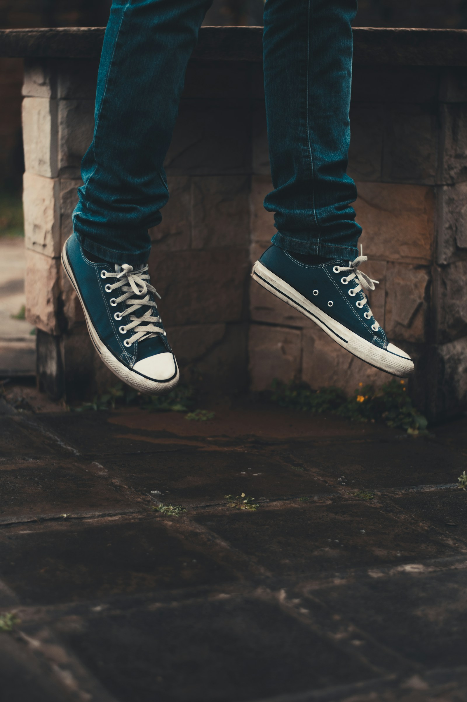
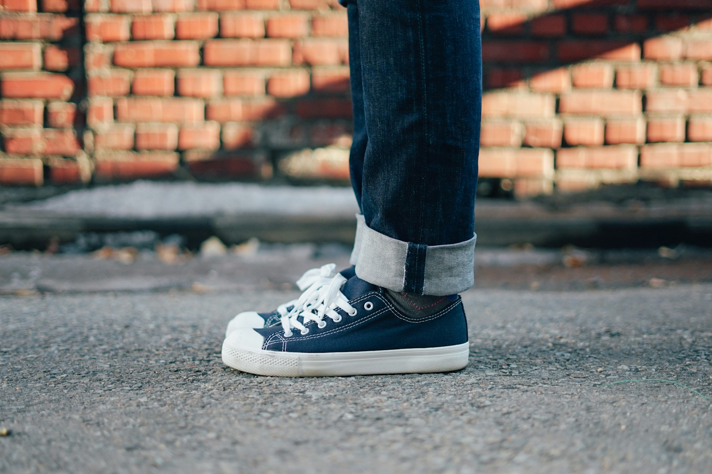

LIFESTYLE IMAGE
FOR THE PAIRS IN YOUR ROTATION.

THE EVERYDAY EDIT / CHARLOTTE + CONCORD
You know the ones.
The pair you wear with everything.
A LITTLE CARE GOES A LONG WAY
Sneakers get worn. That’s the point. When your everyday pair needs a clean, send me a few photos and we’ll go from there.
I’m Mel, and I’m starting a small sneaker-cleaning service here in Charlotte and Concord. I’ll look at the material and condition first, then we’ll agree on the work and the handoff.
HERE’S HOW IT WORKS ↗
$30 / approved pair
A straightforward clean, with the details agreed before you drop off.
On approved materials. Existing wear and some stains may remain.
A clean can’t undo every mile. I’ll talk through the condition with you before accepting your pair.
Cleaning only for now. No restoration, repainting, sole whitening, regluing or repairs.
READ THE DETAILS ↗YOUR TIME. CLEARLY PRICED.
We’ll confirm your return date before you hand over the pair.
Exact return timing is confirmed before booking. Rush requests count toward the same three-pair weekly capacity.
THE MOTION EDIT
Two quick introductions to Mel’s Sneaker Care.
A little care for the shoes you reach for.
Your pair. A conversation. A plan.
Lifestyle imagery for promotion. These videos do not show customer cleaning results.
NO GUESSWORK
Send photos of the fronts, sides, soles and any problem areas. Add the brand/material if you know it and your city.
I’ll review the photos. We’ll agree on the cleaning scope, price and timing before confirming anything.
We’ll arrange a public meetup privately, including a return date. Please wait for confirmation before traveling.
SMALL START. PERSONAL SERVICE.
I’m building this one pair at a time. For now, I’m taking up to three pairs a week so I can keep the workload manageable.
No walk-in shop, no automatic bookings. Just send your shoe photos, tell me whether you’re in Charlotte or Concord, and share the days you could meet. We’ll figure out the details together.
Send photos first. Acceptance depends on the material and condition, so I assess each pair individually.
I don’t promise that. Existing wear, discoloration and some stains may remain. Cleaning is different from restoration or repair.
Start with an estimate of 3–5 calendar days after drop-off. Materials, condition, drying time and workload may affect this estimate. Your return date is confirmed before booking.
Yes—ask first. Same-day cleaning is $45 total per approved pair ($30 cleaning plus a $15 rush fee). Mel must confirm availability, material suitability, drying time and an agreed same-day return time before accepting the rush booking. If same-day service cannot be confirmed, choose an agreed standard date instead. Rush jobs count toward the three-pair weekly limit.
At a public place agreed privately in the Charlotte/Concord area. Both the handoff and return details are confirmed before booking.
No. A message starts the assessment. Your appointment is confirmed after we agree on the scope, price and timing. Capacity is up to three pairs per week; availability is confirmed individually.